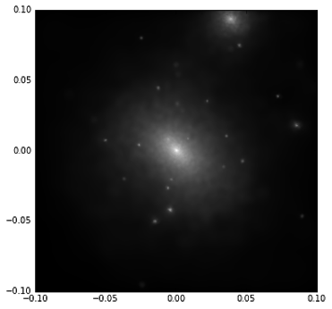
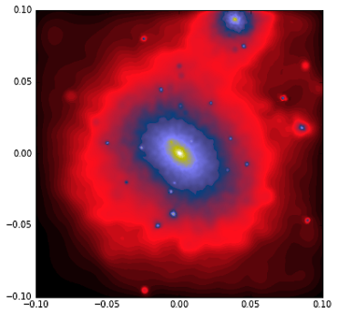

Using QuickView in Py-SPHViewer
QuickView is the simplest way to produce an image with Py-SPHViewer. Here we use a simple example that illustrates its use.
Looking at a dark matter halo with QuickView
In this example we will create an image of a dark matter halo extracted from a cosmological simulation. Before starting the tutorial please download this file.
We can read the content of the file using the h5py library:
import h5py
with h5py.File('dm_halo.h5py','r') as f:
pos = f['Coordinates'].value
The coordinates of the dark matter particles are expressed in Mpc/h, and they trace the density field of a collapsed dark matter halo extracted from a cosmological simulation. Our goal will be to visualise the projected density field.
The image below shows the xy projection of the distribution of particles:

The projected density field can be calculated (and visualised) using QuickView:
from sphviewer.tools import QuickView
qv = QuickView(pos.T, r='infinity', plot=False)
qv.imshow()

Note that we pass pos.T as argument because our array was pos[Npart,3], whereas PySPHViewer expects an array of shape pos[3,Npart]. The argument r=’infinity’ indicates that the camera is looking at the scene from the infinity, so that the scene has to be rendered using a parallel (or orthographic) projection.
QuickView retrieves the active axis and places the image on it; plot=False prevents this from happening. QuickView objects have an associated imshow method to show the final image. Valid *kwargs are identical to those accepted by matplotlib.pyplot.imshow. For example, we can change the colormap and vmin as follows:
qv.imshow(cmap="gist_stern", vmax=2)

There are also methods to retrieve the image generated by QuickView:
img = qv.get_image()
extent = qv.get_extent()
fig = plt.figure(1, figsize=(7,7))
plt.imshow(img, extent=extent, cmap='gist_stern')